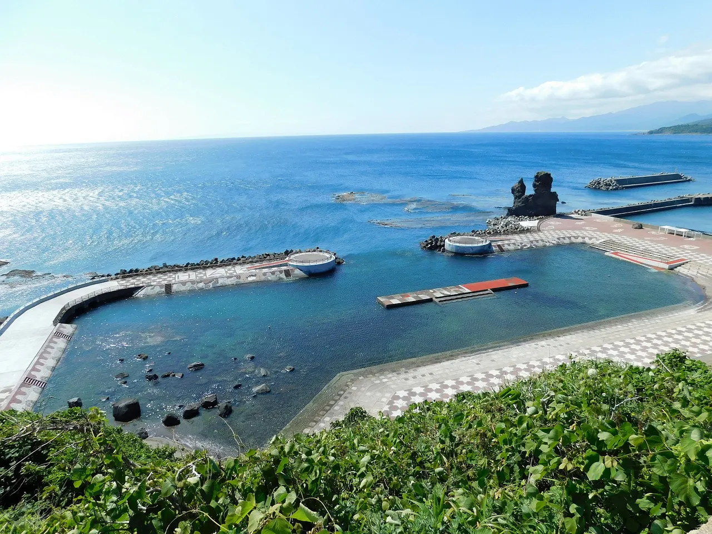
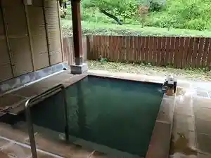
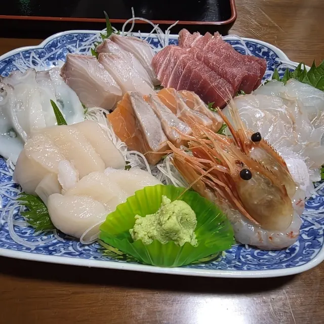
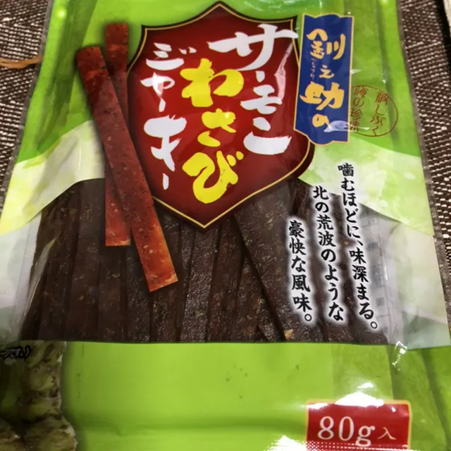
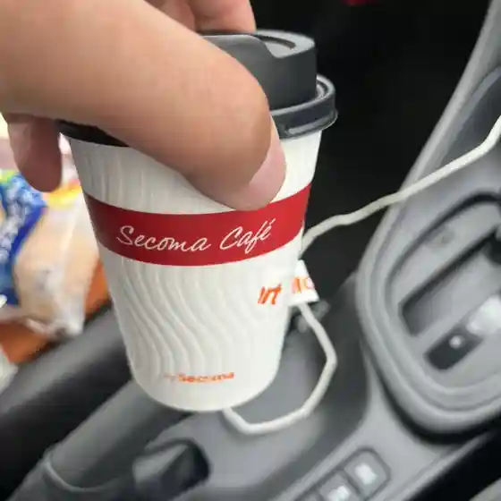
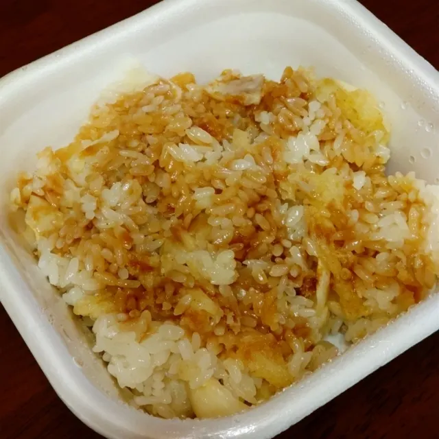
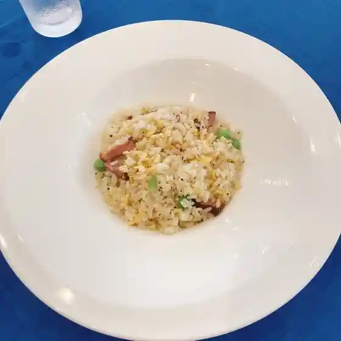
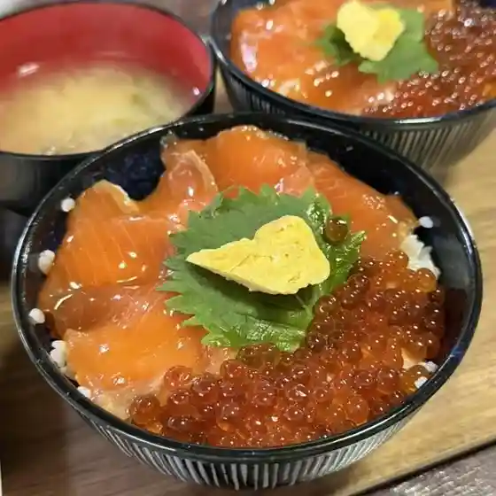
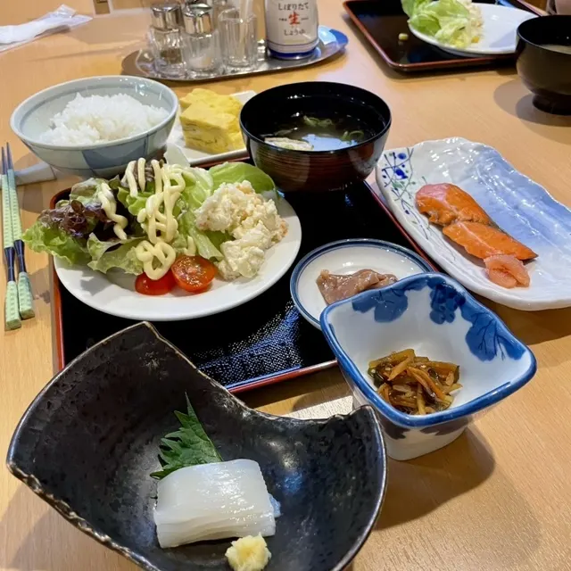

Otobe
Otobe · Hokkaido
Otobe
Highlighted on the Hokkaido map.

Stay
バリアフリーホテルあすなろ
Bariafuriihoteru Asunaro
おとべ温泉郷光林荘

Otobe Onsen Sato Hikari Hayashi Sou
Dining
潮路民宿

Shioji Minshuku
四季彩 岬

Shiki Sai Misaki
釧之助 乙部店

Sennosuke Otobe Mise
セイコーマート 乙部店

Seikoomaato Otobe Mise
小料理屋 ささもり

Koryouriya Sasamori
バリアフリーホテルあすなろ

Bariafuriihoteru Asunaro
津花食堂

Tsubana Shokudou
光林荘

Hikari Hayashi Sou
たごまる
Tagomaru
しおトンコツラーメン 嶋
Shio Tonkotsuraamen Shima
富貴堂
Fuuki Dou
居酒屋和がや
Izakaya Wa Gaya
そば処弥左工門
Soba Tokoro Ya Hidari Kou Mon
セブンイレブン 乙部町店
Sefu N'Irefu N Otobechou Mise
Guild Endeavour
Guild Endeavour
レストラン元和台
Resutoran Genna Dai
LAWSON 乙部館浦店
Lawson Otobe Kan Ura Mise
泰安丸直売所
Taian Maru Chokubai Tokoro
やきとり権兵衛
Yakitori Gonbee
ルート229元和台
Ruuto 229 Genna Dai
のどか
Nodoka